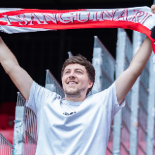
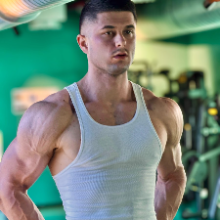
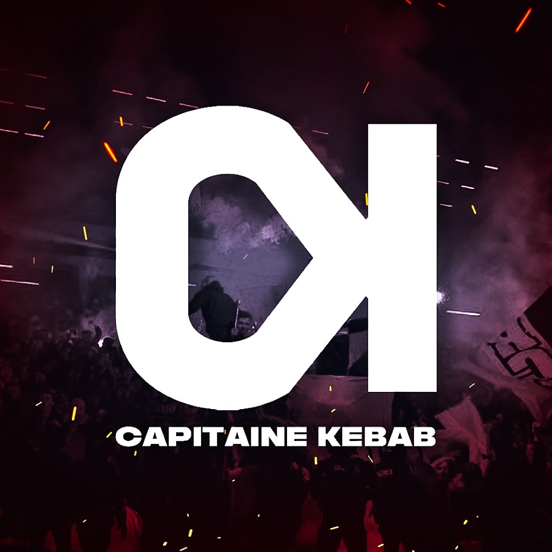

Une sélection de miniatures YouTube réalisées pour de nombreux autres créateurs, chaînes et marques, pensées pour capter l'attention et maximiser le taux de clic sur chaque vidéo.

« Il convertit nos idées en visuels de qualité, impactants, et surtout extrêmement rapidement. Sa très grande amplitude horaire permet une réactivité rare. Nous recommandons activement. »
« Cela fait des années que nous travaillons avec Mathieu, il a toujours apporté une entière satisfaction. Un point important que je dois souligner, c'est la qualité de son travail et la rapidité d'exécution avec laquelle il réalise les projets. Nous travaillons surtout avec lui sur la direction artistique des miniatures sur YouTube et sur Podcast. Je le recommande sans aucune hésitation : il est sympa, réactif et professionnel. »

« Je collabore avec Mathieu depuis plus d'un an sur les miniatures YouTube de ma chaîne, et c'est clairement l'un des meilleurs investissements que j'ai faits pour mon contenu. Ce qui fait la différence, c'est sa capacité à comprendre une ligne éditoriale en profondeur : il ne se contente pas d'exécuter un brief, il propose, challenge et apporte une vraie vision créative. Le CTR parle pour lui. Côté process, c'est fluide et professionnel : briefs compris du premier coup, délais tenus, communication claire sur WhatsApp. Au-delà de la qualité technique, c'est aussi un plaisir de bosser avec lui : bonne énergie, force de proposition et fiabilité à 100%. Je le recommande sans hésitation à toute personne sérieuse qui veut faire passer ses miniatures au niveau supérieur. »

« Mathieu est un grand professionnel, capable de sublimer vos projets et de leur donner forme avec beaucoup de justesse. Toujours réactif et force de proposition, il rend chaque collaboration à la fois efficace et agréable. C'est un véritable plaisir de pouvoir travailler avec lui chaque semaine. »
« Hyper réactif, à l'écoute, et je recommande fortement de lui demander son avis, il a de très bonnes idées ! A travaillé avec Mathieu pour différents types de visuels (minia, carrousels, affiches d'événements etc). »